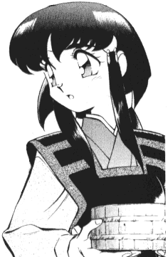

Copyrights |
Legal information related to this site. |
Unless otherwise stated below, the contents of this page is copyrighted © 1997-2002 by Aldrich "GenSao" Bautista. All rights reserved. The HTML, text, logos, images, and other related parts of this archive is protected and can not be used elsewhere without the express written consent of Aldrich "GenSao" Bautista.
Tenchi Muyo is copyrighted © 1992-2002 AIC * Pioneer LDC. All images, characters, locations, and anything that is directly derived from Tenchi Muyo is theirs. All rights reserved. Images used in this page follow the guidelines set by AIC.
The Tenchi Muyo manga images are copyrighted by © 1996-2001 Hitoshi Okuda * AIC * Pioneer LDC. First Published in 1996 by Kadokawa Shoten Publishing Co., Ltd, Tokyo, Japan, and later published in English by Viz Communications, Inc. San Francisco, CA. All rights reserved. Images files are listed from which part of the manga they came from.
All fan fiction on this site are owned and copyrighted by their respected authors. Distribution of fan fiction is permitted free of charge. Fan fiction should not be posted without the consent of the author of the story. They own the copyrights to their story and must be respected. Reproduction or storage of materials retrieved from this service is subject to the U.S. Copyright Act of 1976, Title 17 U.S.C.
The fan fiction on the Tenchi Muyo Fan Fiction Archive is posted with the implicit and/or implied permission of the various fan fiction writers that have their works posted on this page. Please do not steal fan fics, or pandas can get very mad. ^_^
All crossovered characters, worlds and depictions are copyrighted their respective owners, too numerous to list here. Copyrights should be acknowledge in the fan fiction. Any copyrighted work that is not mentioned in this notice but is used in a part of this archive is copyrighted by their respective company.
I am not responsible for the content of the stories, comments, and other things written by third party groups/individuals that post here except for my own stories and comments. If you have any problems or comments about a story, take it up with the author.
The banner images that are used to advertise for this site can be freely used without the need to ask for permission to use the images. Hey, ^_^ I want to let you use those images to advertise for my site. You may not use any other image in this archive for public use.
If you have any questions regarding copyrights, ownership, etc., please don't hesitate to contact Aldrich "GenSao" Bautista.